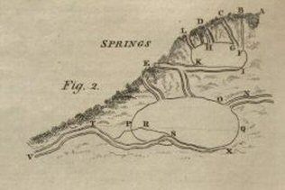

Hutton* actually gives us:
|  |
Different sorts of Springs. Springs are either such as run continually, called perennial; or such as run only for a time, and at certain seasons of the year, and therefore called temporary Springs. Others again are called intermitting Springs, because they flow and then stop, aud flow and stop again; and reciprocating Springs, whose waters rise and fall, or flow and ebb, by regular intervals. In order to account for these differences in Springs, let ABCDE (fig. 2, pl. 27) represent the declivity of a hill, along which the rain descends; passing through the fissures or channels BF, CG, DH, and LK, into the cavity or reservoir FGHKMI; from this cavity let there be a narrow drain or duct KE, which discharges the water at E. As the capacity of the reservoir is supposed to be large in proportion to that of the drain, it will furnish a constant supply of water to the spring at E. But if the reservoir FGHKMI be small, and the drain large, the water contained in the former, unless it is supplied by rain, will be wholly discharged by the latter, and the Spring will become dry: and so it will continue, even though it rains, till the water has had time to penetrate through the earth, or to pass through the channels into the reservoir; and the time necessary for furnishing a new supply to the drain KE will depend on the size of the fissures, the nature of the soil, and the depth of the cavity with which it communicates. Hence it may happen, that the Spring at E may remain dry for a considerable time, and even while it rains; but when the water has found its way into the cavity of the hill, the Spring will begin to run. Springs of this kind, it is evident, may be dry in wet weather, especially if the duct KE be not exactly level with the bottom of the cavity in the hill, and discharge water in dry weather; and the intermissions of the Spring may continue several days. |
But if we suppose XOP to represent another cavity, supplied with water by the channel NO, as well as by fissures and clefts in the rock, and by the draining of the adjacent earth; and another channel STV, communicating with the bottom of it at S, ascending to T, and terminating on the surface at V, in the form of a siphon; this disposition of the internal cavities of the earth, which we may reasonably suppose that nature has formed in a variety of places, will serve to explain the principle of reciprocating Springs; for it is plain, that the cavity XOP must be supplied with water to the height QPT, before it can pass over the bend of the channel at T, and then it will flow through the longer leg of the siphon TV, and be discharged at the end V, which is lower than S. Now if the channel STV be considerably larger than NO, by which the water is principally conveyed into the reservoir XOP, the reservoir will be emptied of its water by the siphon; and when the water descends below its orifice S, the air will drive the remaining water out of the channel STV, and the Spring will cease to flow. But in time the water in the reservoir will again rise to the height QPT, and be discharged at V as before. It is easy to conceive, that the diameters of the channels NO and STV may be so proportioned to one ancther, as to afford an intermission and renewal of the Spring V at regular intervals. Thus, if NO communicates with a well supplied by the tide, during the time of flow, the quantity of water conveyed by it into the cavity XOP may be sufficient to fill it up to QPT; and STV may be of such a size as to empty it, during the time of ebb. It is easy to apply this reasoning to more complicated cases, where several reservoirs and siphons communicating with each other, may supply Springs with circumstances of greater variety. See Musschenbroek's Introd. ad Phil. Nat. tom. ii. pa. 1010. Desagu. Exp. Phil. vol. ii, pa. 173, &c. |
|